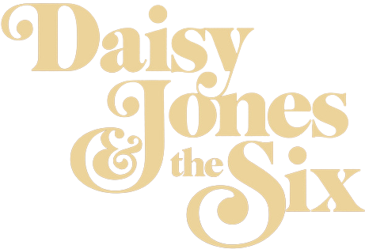

Em 1977, a banda Daisy Jones The Six saiu da obscuridade e alcançou o estrelato. Mas o grupo acabou abruptamente, deixando os fãs desolados. Décadas depois, os integrantes finalmente concordam em abrir o jogo e revelar a verdade.
X